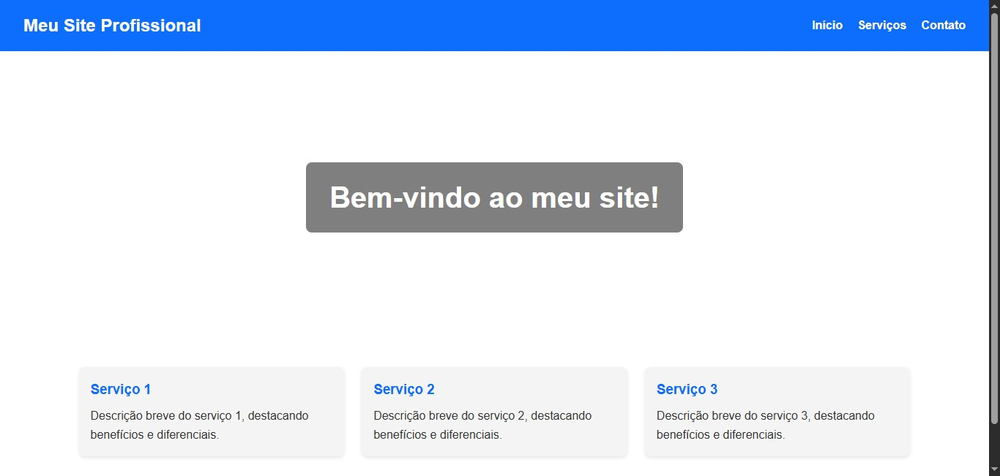
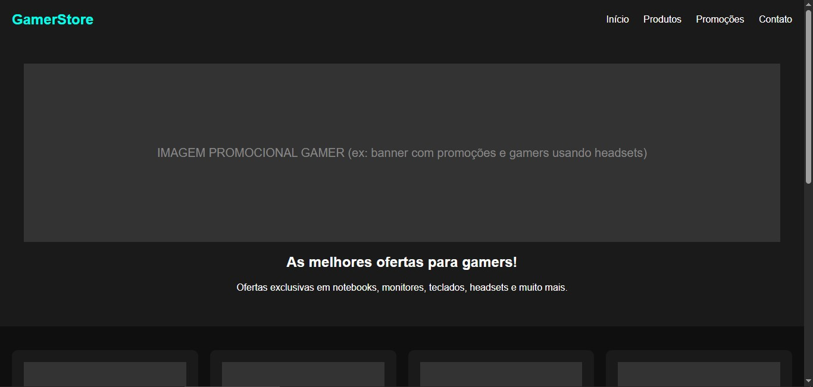
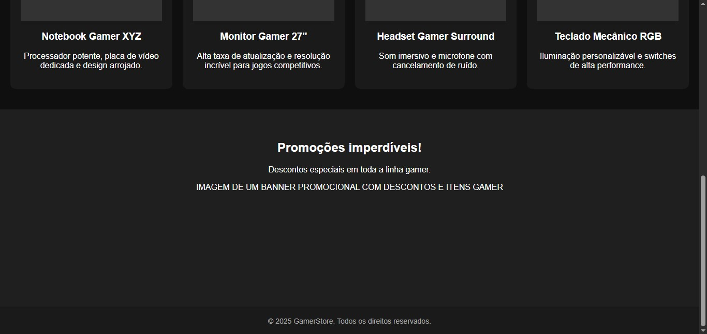
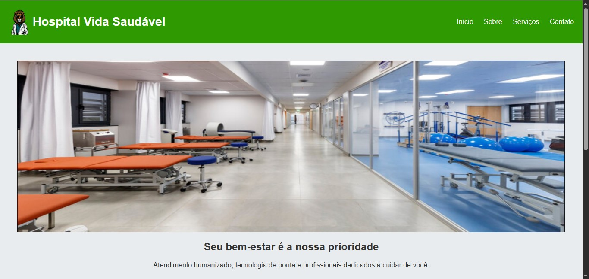
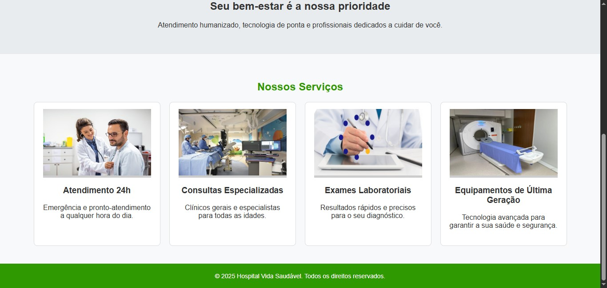
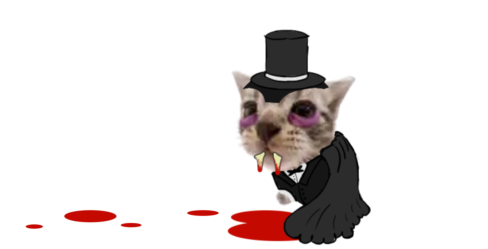

Design de Site

Olá alunos, para contextualizá-los, eu criei este site para lecionar o conteúdo de design de site para vocês, também vou usá-lo para ajudar vocês a relembrar sobre os conteúdos de html e css, já que será necessário o conhecimento sobre front-end de site para prosseguirmos com o conteúdo de design de site.
Então, antes de entrarmos no conteúdo de design de site, vamos dar uma leve relembrada em conceitos de front-end para prosseguirmos com o conceito de design de site. Mais especificamente, no conteúdo de html e css. Para isso vou pedir que cliquem com o botão direito do mouse em qualquer canto do site, em seguida selecionem a opções inspecionar, isso vai abrir a janela de inspeção.


Agora podemos observar o código HTML e CSS. Suponho que vocês possuem a noção de que: o HTML define a estrutura e os componentes que estarão presentes no site, enquanto o CSS é responsável por definir o estilo e a aparência visual desses componentes, como cores, fontes, espaçamento e layout. Assim, trabalhando juntos, HTML e CSS possibilitam a criação de páginas web completas, estruturadas e visualmente atraentes.
Enquanto a linguagem de marcação HTML funciona através de uma estrutura hierárquica construída com <tags>, a linguagem de estilo CSS não possui o objetivo de ter uma estrutura, apenas foca em definir parâmetros visuais desejados. Vocês podem observar isso na maneira que eu escrevi o código HTML e CSS deste site. Também deixei comentários no código para que vocês possam entender e relembrar o que cada componente faz.


Bem, acredito que depois de uma lida no código do site vocês já tenham lembrado ou entendido mais ou menos como funciona essas duas linguagens para montar um site. Agora, vamos entender o que é o design de site. Podem fechar a janela de inspeção.
O que é Design de Site?
Quando falamos em design de site ou Web Design, estamos nos referindo à prática de planejar, criar e organizar visualmente uma página ou conjunto de páginas na internet. O objetivo é transformar a informação em algo agradável, acessível e funcional para o usuário final.
Um site bem projetado é aquele que não apenas apresenta informações, mas faz isso de forma clara, organizada e intuitiva. Imagine que você entra em um site e não consegue achar o menu, não entende onde clicar ou fica perdido entre textos desorganizados. Isso é um problema de design, e é aí que entra a computação gráfica, que fornece as ferramentas para criar elementos visuais que facilitam a navegação e melhoram a experiência do usuário.
Elementos principais do design de site
1. Layout
O layout é a forma como os elementos são distribuídos na página: onde vão os textos, as imagens, os menus e os botões. Um bom layout facilita a leitura e ajuda o usuário a encontrar rapidamente o que precisa. Exemplo: uma página inicial geralmente tem uma estrutura com cabeçalho (header), corpo principal (main) e rodapé (footer). Dentro do corpo principal, podemos ter seções de destaque, notícias recentes, área de contato, etc.
2. Cores e Tipografia
As cores transmitem sensações (tranquilidade, urgência, diversão) e ajudam a criar uma identidade visual. Por exemplo, cores claras podem dar leveza, enquanto cores fortes podem chamar a atenção para algo importante. A tipografia é a escolha de fontes e tamanhos de texto. É essencial que os textos sejam legíveis, tanto em computadores quanto em celulares.
3. Imagens e Ícones
Imagens, ilustrações e ícones tornam o site mais atraente e ajudam a transmitir informações de forma visual. Em computação gráfica, trabalhamos a edição dessas imagens para que fiquem adequadas à proposta do site e sejam otimizadas para a web (ou seja, que carreguem rápido).
4. Navegação
Um site precisa ser fácil de usar. Isso significa ter menus e links claros, que levem o usuário de forma intuitiva de uma seção a outra. A navegação pode ser horizontal (menu no topo) ou vertical (menu na lateral), dependendo do projeto.
5. Responsividade
Hoje em dia, muita gente acessa a internet pelo celular ou tablet. Por isso, o design de site deve ser responsivo, ou seja, deve se adaptar a diferentes tamanhos de tela, mantendo a usabilidade.
Tendências do Web Design
Assim como outros espectros da cultura humana, o design utilizado em grande maioria dos sites seguem padrões que são mais chamativos em determinado momento. Um exemplo e a crescente utilização de técnicas de Grid para a construção de sites profissionais, já que a um aumento na demanda de sites de design simétrico.
Tendo noção sobre com o que o web design trabalha, vamos observar algumas tendências de designs muito utilizadas, para termos uma melhor noção do que utilizar como base.
Neoformismo é um estilo de design usado em qualquer interface gráfica de usuário, não apenas em sites. É comumente identificado por uma aparência suave e leve, com elementos que parecem se projetar ou amassar o fundo, em vez de flutuar sobre ele. Às vezes é considerado um meio-termo entre o skeuomorfismo(uso de componentes que parecem objetos reais) e o design plano(design minimalistas e de aparência plana).

Gradientes fluidos e dinâmicos é uma técnica de design que utiliza transições suaves e progressivas entre cores para criar efeitos visuais interessantes e modernos. Eles são frequentemente utilizados em logotipos, fundos de sites e ilustrações, proporcionando um toque de sofisticação e originalidade aos designs.

Microinterações e Feedback Visual são pequenas animações e feedbacks visuais que aprimoram a experiência do usuário em produtos digitais, tornando-os mais intuitivos, envolventes e eficientes. Elas servem como um mecanismo de comunicação sutil entre o usuário e o sistema, indicando o sucesso de uma ação, o status de uma operação ou guiando o usuário em tarefas.
Suporte a temas variados que são alterações no uso das cores e contraste de um site, que segue o que o usuário está utilizando em seu aparelho ou navegador. Essas opções agradam o consumidor e da acessibilidade a pessoas que possuem alguma deficiência visual. Um bom exemplo disso é a opção de dark mode que vem junto as configurações de um site.
Ilustrações e elementos 3D estão ganhando destaque nas tendências de design de sites, proporcionando experiências mais imersivas e interativas aos utilizadores. A integração de 3D, em particular, permite a criação de designs mais realistas e personalizáveis, impulsionando o engajamento e destacando as marcas. Os tipos de modelos 3d mais usados são elementos arredondados e com cores não muito saturadas.

Acessibilidade como Padrão Design inclusivo ao decorrer do tempo passou a não ser mais opcional em um site. Cores com contraste adequado, navegação por teclado, leitores de tela e foco visível são prioridades. Sites que não consideram acessibilidade acabam perdendo público e até sofrendo penalidades legais.
Claro que nem todos os sites seguem as tendências, muitos ainda tentam manter um design original e diferente, focando na atentividade. Mas normalmente são sites nichados que focam em um tipo de consumidor específico.
Exemplos de design de site
Bem, acredito que seja bom também dar alguns exemplos de aplicação de design de site para vocês. Aqui temos alguns exemplos:
Design simples e de uso geral
O primeiro exemplo é um design de site simples e que qualquer instituição pode usar. É um design que não é muito chamativo, mas apresenta os pontos principais que um site deve ter, apresenta a instituição com a logo e um banner com um texto introdutório, e com uma simples rolagem o usuário tem acesso aos serviços que o site oferece.
 Clique aqui para dar uma olhada neste site.Design gamer
O segundo exemplo já é um design mais específico, que foca em chamar atenção de um público específico, nesse caso o público jovem e gamer. Isso claro, se deve pelo uso de cores mais vibrantes e luminescentes e de um fundo preto, que é associado com a estética gamer atual. Também é um site de venda, exibindo suas promoções como banner e logo em seguida alguns de seus produtos.
  Clique aqui para dar uma olhada neste site.Design hospital
O terceiro e último exemplo, assim como o segundo, buscou um público específico para construir o design do site. Neste caso o público-alvo são pessoas que precisão de ajuda médica, pode se observar que o site traz um ar agradável e aconchegante, isso por causa das duas simples cores usadas(verde e branco), e por não trazer muito informação na página informação na tela. Sendo perfeito para uma leitura calma para absorver melhor as informações.
  Clique aqui para dar uma olhada neste site.
Atividade
A atividade deste conteúdo é bem simples, quero que vocês escolham qualquer site(de qualquer instituição ou empresa), e me enviem o link deste site para mim no classroom, junto ao link, vocês vão me dizer o que, para você, o design do site transmiti, e o que você acredita que ele queria transmitir. Vocês podem mandar o texto no comentario particular da atividade, ou como um arquivo de texto ou foto anexado na atividade.
Trabalho
Como observado no conteúdo deste trimestre, a construção de um design de site envolve vários componentes a serem considerados, como a idealização de um layout(), escolha de cores, tipografia e imagens, além de pensar em uma boa navegação e responsividade do site. Com isso em mente, elabore um design de site utilizando o programa Gimp, ou usando as linguagens html e css.
Exemplo de web design com Gimp:
Exemplo de web design na prática: Site do hospital
Leia as instruções adicionais no classroom para melhor compreensão de como realizar trabalho corretamente.

Fim.